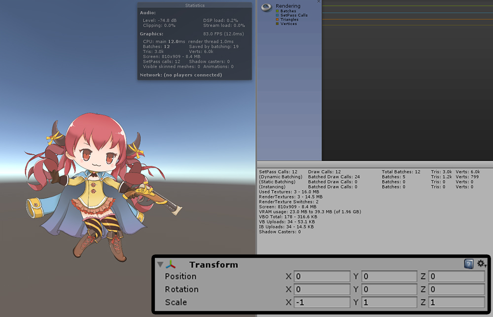
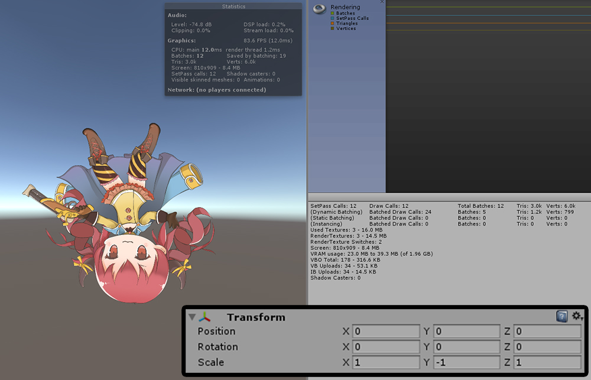

AnyPortrait > Manual > Inverted Scale and Drawcall
Inverted Scale and Drawcall
1.1.6
If you want to invert the left / right or top / bottom of the completed character, you can usually invert the sign of the Scale value of the Transform.
However, inverting the scale value causes the Drawcall to increase.
In 1.1.6 version of AnyPortrait, Drawcall is not increased even if the scale is inverted.
You can check the relationship between inverted scale and Drawcall through the screenshots below.

The scale is not inverted yet.
Drawcall in the scene is measured as 12.

The X value of the scale is inverted to -1.
The left and right sides of the character are reversed.
Generally, Drawcall Batching is canceled and the value of Drawcall is increased.
However, in this case, Drawcall is equally measured as 12, even when the scale is reversed.

Even if you invert the Y value of the scale, Drawcall remains the same as 12.
Now when you create a game, you do not have to worry about optimizing about Drawcall.